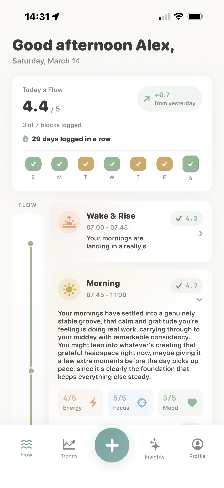
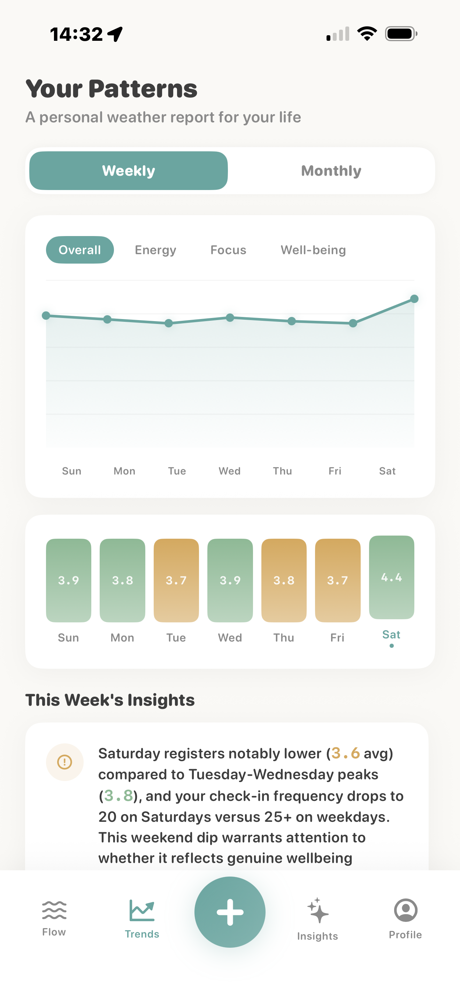
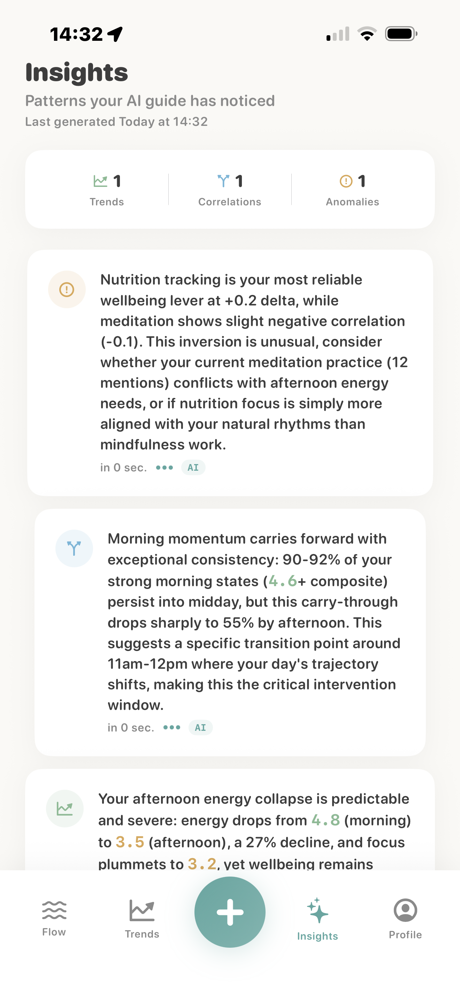

Log how you feel in seconds
Quick ratings for energy, focus, and well-being keep the habit light enough to actually sustain. A streak keeps momentum without pressure.
Know your flow
lunevo turns quick daily check-ins into a softer, more useful picture of how your energy, focus, and well-being move through the day.

Simple by design
Quick ratings for energy, focus, and well-being keep the habit light enough to actually sustain. A streak keeps momentum without pressure.
Instead of rigid time blocks, lunevo frames the day in soft phases — Wake & Rise, Morning, Midday, Afternoon, Evening — that match how life really feels.
AI insights are grounded in your own data — tracking trends, correlations, and anomalies — not generic wellness advice.
Inside the app
Your daily rhythm at a glance. Each phase shows how your energy, focus, and mood are landing — with a score that reflects the whole day.

A personal weather report for your life. Track energy, focus, and well-being week over week, and see when your best days tend to cluster.

Patterns your AI guide has noticed. Honest, specific observations drawn from your own check-ins — surfacing what the numbers actually mean.
About lunevo
Most productivity tools assume you run on a fixed schedule. lunevo doesn't. It was built around the reality that energy isn't linear — it rises, dips, and shifts in ways that vary from day to day and person to person.
The name blends the cyclical quality of natural rhythms with the idea of renewal. Every check-in is a small act of self-awareness, and over time those small moments become a genuinely useful picture of who you are and how you move through your days.
We keep the experience calm, the data yours, and the guidance honest. No hustle, no gamification, no notifications telling you to do more. Just a clearer view.
Every design decision favors quiet clarity over stimulation. Less is always more.
Your check-ins are personal. We never sell your data or use it for advertising.
AI insights are grounded in your actual patterns — not generic wellness platitudes.
Your day has a rhythm.
Listen to it with lunevo.